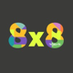
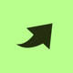
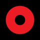

Taste Labs // Integrated Designer (Critique & Art Direction)
07/2026 - Now • Remote
Taste Labs
Diogo Maia Caetano
Digital Product Designer · 11+ years
I'm a visionary, passionate about futuristic solutions that radically improve people's lives by simplifying the processes behind them. For more than half of my career, I've done that for unicorns and NYSE-listed companies.
Taste Labs // Integrated Designer (Critique & Art Direction)
07/2026 - Now • Remote
Taste Labs
AstraZeneca // Product Designer
12/2025 - 06/2026 • Remote
Providing design guidance and solutions across multiple pharma industry initiatives, translating complex clinical and operational workflows into clear, human-centred digital experiences.
Sensei // Product Designer
05/2025 - 12/2025 • Lisbon, PT
Design system adopted across all product lines

8x8 // Lead Product Designer
12/2022 - 09/2024 • Remote

Feedzai // Senior Product Designer
07/2021 - 12/2022 • Remote

OutSystems // UX/UI Design Consultant
06/2020 - 12/2020 • Remote
Papersoft // Senior Product Designer
08/2019 - 06/2020 • Lisbon, PT
Apiax // Product Designer
10/2018 - 08/2019 • Lisbon, PT
AnyBrain // Founding Product Designer
03/2017 - 10/2018 • Braga, PT
"Since I've known Diogo and worked with him, I've been able to count on a well-executed job, with attention to detail, good research practices, a design thinking approach, and the use of collaborative tools throughout the process.
I recommend Diogo's work, which demonstrates experience and a critical sense of facing the exposed problems. In short, Diogo manages to come up with a well-thought-out and designed solution to overcome the problem in hands."
"I had the privilege of hiring Diogo onto our team, and from day one, he made a significant impact. His UI skills are unparalleled, and I always had complete trust in his design expertise. Diogo not only excelled in creating stunning interfaces but also consistently demonstrated a willingness to help the team improve.
I can confidently say that Diogo is a valuable asset who will continue to contribute positively to the team's success. His dedication and talent are undeniable, making him an outstanding choice for any future endeavours."
"I have had the incredible opportunity of being both an intern and fully employed at 8x8, with Diogo as my mentor for about 3-4 months, and I can't express how grateful I am for the experience. Diogo consistently showed a genuine interest in my growth and development, and I knew that I could always count on him to provide guidance and support. He was very patient with me and ensured I understood the assignments, making me feel confident in my journey. His mentorship has been an invaluable asset to my personal and professional growth, and I can’t thank him enough for his dedication and support.
I can truly say that Diogo is not just a mentor but a role model. I am fortunate to still have him as my guide because every day I learn something new from him that brings a lot of value to my career as a Product Designer."
"I worked with Diogo at Jammin' as a Marketing Intern for 8 weeks and had an invaluable experience. Diogo is a strong leader that brings fresh ideas and constantly guided the team with clarity. One of the best parts of working with him was his willingness to trust me with full creative control, actively supporting my ideas. It was a pleasure working for him at Jammin'!"